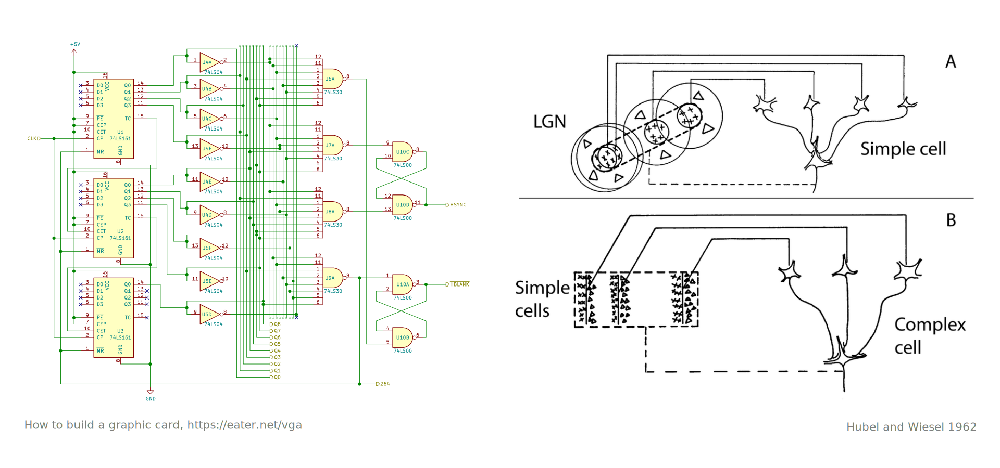
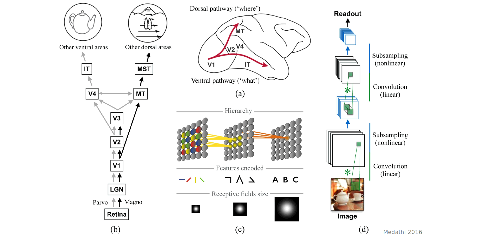
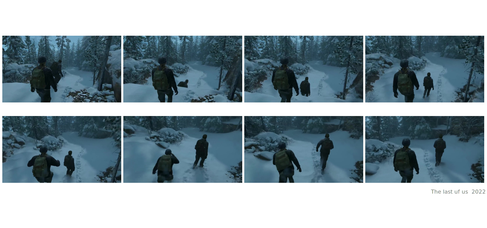
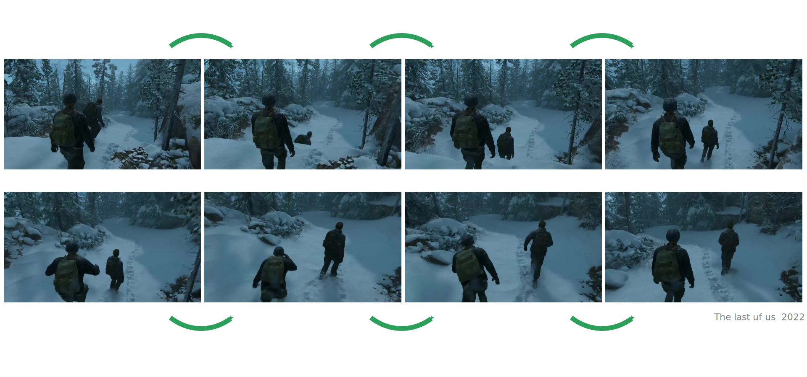
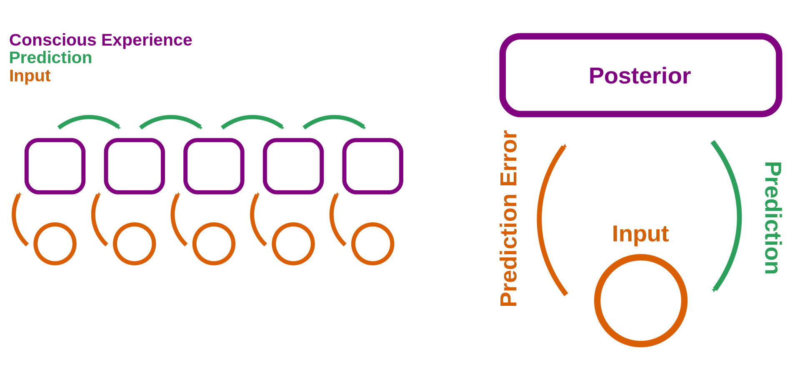
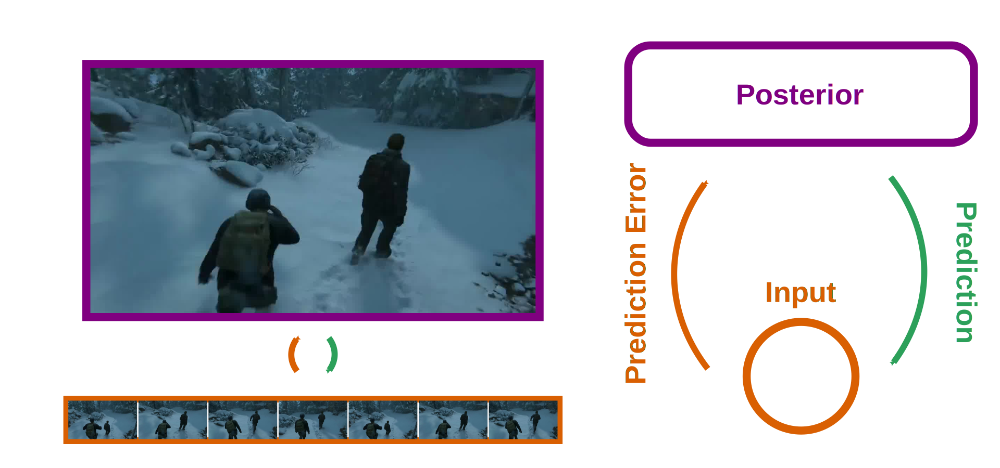
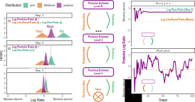
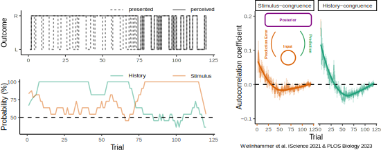
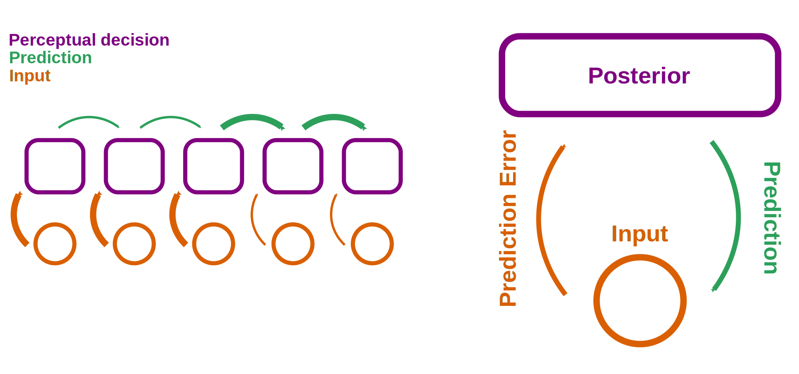

How alterations in perceptual inference drive psychotic experiences
Feedforward processing

- Individual frames are processed independently
Feedforward processing

- Individual frames are processed independently
Natural environments

- Individual frames are strongly autocorrelated
Natural environments

- One frame predicts the next
Predictive coding

- Predictive coding compresses the input and saves energy
Predictive coding

- Predictive coding generates high-quality experiences.
Circularity
- The balance between predictions and prediction errors needs to be regulated
Hallucinations

Circularity
- How to study the balance between internal predictions and prediction errors?
Predictive Coding

Predictive Coding
Predictive Coding
Predictive Coding
Predictive Coding

Predictive Coding
Model-based FMRI

- Prediction errors are encoded in IFC and V5/hMT+.
Theta-burst TMS

- Prefrontal prediction errors are relevant for conscious experience.
Graded Ambiguity

Circularity
- Bistable perception balances internal predictions with external sensory information.
Hallucinations
- Psychotic symptoms: enhanced predictions or excessive prediction errors?
Computational Psychiatry

Enhanced prediction errors

- A shift toward prediction errors may contribute to hallucinations.
Hierarchical effects
- Multilevel changes contribute to the emergence and persistence of hallucinations.
Circularity
- How to regulate the balance internal predictions and external sensory information?
Graded Ambiguity

Perceptual Modes

- Stimulus- and history-congruence are autocorrelated.
- Perception switches between externally- and internally-biased modes.
Perceptual Modes

- Confidence Database: 4500 humans, 22 million choices
- IBL Database: 165 mice, 1.5 million choices
Perceptual Modes

- Switches between external and internal mode balance internal predictions and external sensory information.
Summary
Outlook

- Shifting the balance between external and internal mode by blocking NMDA-receptors
Outlook

- Inhibitory TMS for chronic hallucinations
Thanks a lot for your attention!
Bibliography
Weilnhammer, Stuke, Hesselmann, Sterzer, Schmack. A Predictive Coding Account of Bistable Perception. PLOS Computational Biology 2017.
Weilnhammer, Lukas, Eckert, Stuke, Heinz, Sterzer. Psychotic Experiences in Schizophrenia and Sensitivity to Sensory Evidence. Schizophrenia Bulletin 2020.
Weilnhammer, Fritsch, Chikermane, Eckert, Kathak, Stuke, Sterzer. An Active Role of Inferior Frontal Cortex in Conscious Experience. Current Biology 2021.
Weilnhammer, Chikermane, Sterzer. Bistable perception alternates between internal and external modes of sensory processing. iScience 2021.
Weilnhammer, Stuke, Standvoß, Sterzer. Humans and mice fluctuate between external and internal modes of sensory processing. BioRxiv 2022.